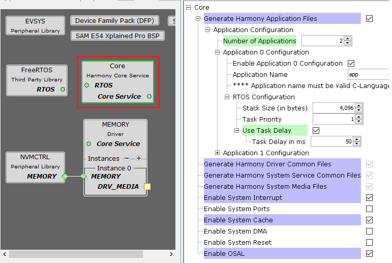

Harmony Core library component provides common configurations to drivers, system services and middlewares.
It also provides options to create application template files for the user to kick-start on developing the application.
Key points to be noted
All the drivers, system services and middlewares are dependent on the Harmony Core component.
If you add any of these modules in project graph and Harmony core component is not already activated, a pop-up appears to activate Harmony core
Failure to activate Harmony Core component may result in build failures as these modules are dependent on it.
As Harmony Core component is dependent on RTOS, a pop-up will appear the first time Harmony Core is activated to add FreeRTOS if it was cloned. As this is optional dependency user can choose to not activate it.
If FreeRTOS is activated, all the existing modules will run in RTOS environment and each module may have its own RTOS settings.
If not activated, all the existing modules will run in Bare-Metal environment.
The following figures show the MHC configuration window for Harmony core component and brief description.

All of below mentioned options are enabled or disabled automatically based on the any driver, system service or middleware components added into the project graph. Disabling any of these symbols may lead to build errors in the dependent module
configuration.h header file will be generated only when one of the below common symbols or application file option is selected
For Example: In above snapshot as Memory driver is added to project graph, few of the common symbols are enabled and made Read-Only to avoid accidental disabling.
Refer to Individual Library help for more details
Configuration Options
Generate Harmony Application Files:
This option can be used to generate Harmony application template source and header files.
These generated files can be used as starting point by the developer to develop his application
Application Configuration:
Number of Applications:
Specifies the number of application template source and header files to be generated.
Application n Configuration:
Enable Application n Configuration:
This option can be used to disable or enable generation of current instance of application files
Application Name:
Specifies the name of the application source and header files to be generated. By default a number sequence will be prefixed based on instances. Below are the files generated if name is app
app.c
app.h
User can update this field to provide custom names as required. The name must be valid C-language identifier, short and in lowercase
An asscociated task routine APP_Tasks() will be generated in application source file and will be called from SYS_Tasks() routine
RTOS Settings:
This configuration is displayed when any RTOS is added into project graph
Stack Size (in bytes):
Specifies the number of bytes to be allocated on the stack for the current application task
Task Priority:
Specifies priority for the application task thread. The value can vary based on RTOS used
Use Task Delay?
When enabled the application task will be scheduled out voluntarily after every run based on the delay configured.
Task Delay:
Specifies the duration the task has to go to sleep after every run.
Should be configured carefully based on the application need and number of task running along in the system
Generate Harmony Driver Common Files:
When enabled generates the driver common header files required by all Harmony Drivers
Generate Harmony System Service Common Files:
When enabled generates the system service common header files required by all Harmony System services and Drivers.
Generate Harmony System Media Files:
When enabled generates the system media header file required by Media block drivers and File System Service.
Enable System Interrupt:
This option can be used to enable System Interrupt library
Enable System Ports:
This option can be used to enable System Ports library
Enable System Cache:
This option can be used to enable System Cache library
Enable System DMA:
This option can be used to enable System DMA library
Enable System Reset:
This option can be used to enable System Reset library
Enable OSAL:
This option can be used to enable OSAL (Operating System Abstraction Layer) library
OSAL will get auto enabled and set to "BareMetal" when Middleware or any Driver is instantiated. If any Third-Party Library i.e. RTOS is added then the respective OSAL Layer code will get generated.
For instance if user instantiates FreeRTOS, then OSAL is set to FreeRTOS and osal_freertos.c code will get generated during code generation.
RTOS Settings For MicriumOS-III RTOS
Below additional options are visible in Application instance RTOS settings when the MicriumOS-III is added into project graph

Maximum Message Queue Size:
This argument specifies the maximum number of messages that the task can receive through internal message queue.
A MicriumOS-III task contains an optional internal message queue (if OS_CFG_TASK_Q_EN is set to DEF_ENABLED in os_cfg.h).
The user may specify that the task is unable to receive messages by setting this argument to 0
Task Time Quanta:
The amount of time (in clock ticks) for the time quanta when Round Robin is enabled.
If you specify 0, then the default time quanta will be used which is the tick rate divided by 10.
Task Specific Options:
Contains task-specific options. Each option consists of one bit. The option is selected when the bit is set.
The current version of MicriumOS-III supports the following options:
Stack checking is allowed for the task:
Specifies whether stack checking is allowed for the task
Stack needs to be cleared:
Specifies whether the stack needs to be cleared
Floating-point registers needs to be saved:
Specifies whether floating-point registers are saved.
This option is only valid if the processor has floating-point hardware and the processor-specific code saves the floating-point registers
TLS (Thread Local Storage) support needed for the task:
If the caller doesn�t want or need TLS (Thread Local Storage) support for the task being created.
If you do not include this option, TLS will be supported by default. TLS support was added in V3.03.00